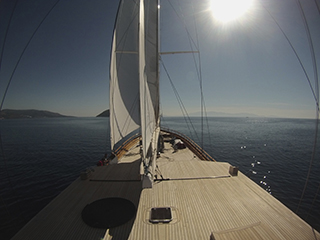
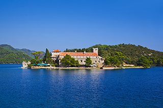
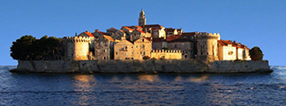
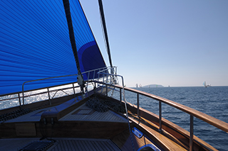
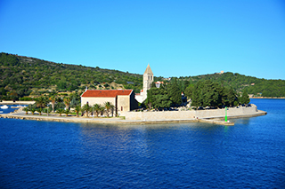
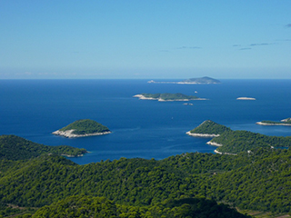
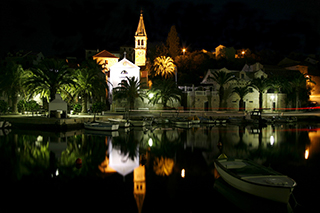

We should like to offer you charter from 7Dubrovnik to Split. This privileged charter should be a very special event. Below we highlight some places you visit during this 7 days charter.

Saturday: Embarkation at 17,00 h in Dubrovnik
.The Queen of Datca set sail for Sipan Island, where you spend your first night on board. Sipan is 11 nm Northwest of Dubrovnik, separated by the mainland by the Kolocepski channel.
Sipan has a very genuine feel, with its vineyards, olive groves and fisherman - a great base for a few days of absolute peace and quiet and a taste of everyday Croatia

Sunday: Leaving Sipan for Mljet Island.
Mljet - not easy to describe the feeling that gets you when you enter in the silent and mystery beauty of this island. One can see that this island is living on its' own time, by its' own rhythm.

Monday: Leaving Mljet for Korčula
Korcula’s abundant culture and history helped define its popular name ‘Little Dubrovnik’, a wonderfully romantic promenade runs through the town by the city walls and is teeming with lively cafes. Korcula town is also claimed to be the birth place of Marco Polo

Tuesday: Leaving for Lastovo Island, overnight on Lastovo.
The ancient stone houses are appealingly dilapidated and there's a lovely little Renaissance church. Take the stairs in front of the church and climb up the hill to the meteorological station where you can enjoy unforgettable views over the islets scattered in the nearby sea.The bays are stunning.

Wednesday: Leaving Lastovo for Island Vis
But this isolation, however difficult it was for the inhabitants of the island of Vis, placed Vis among the favorite destinations of the entire Mediterranean when Croatia became independent. Beautiful beaches, preserved nature, ecological agriculture and preserved traditional architecture are unique advantages of this unique island

Thursday: Leaving Vis for Hvar, Pakleni Islands
Hvar’s location at the center of the Adriatic sailing routes has long made this island an important base for commanding trade up and down the Adriatic, across to Italy and throughout the wider Mediterranean. It has been inhabited since pre-historic times, originally by a Neolithic people whose distinctive pottery gave rise to the term Hvar culture.

Friday: Leaving Hvar for Milna
Milna is located on the western part of the island Brac It is famous by its marvellous bay, in which the ships of the emperor Diokletian have found a secure harbour in the time of the building of his palace in Split.
Today there is a marina with several berths, modern equipped for a secure stay and the service of yachtsmen from the whole world.
Saturday: Split disembarkation at 9:00h